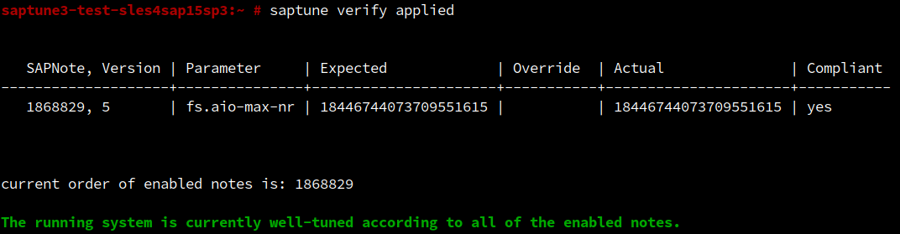
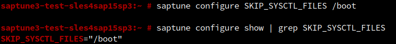
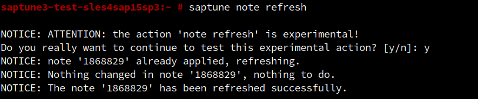
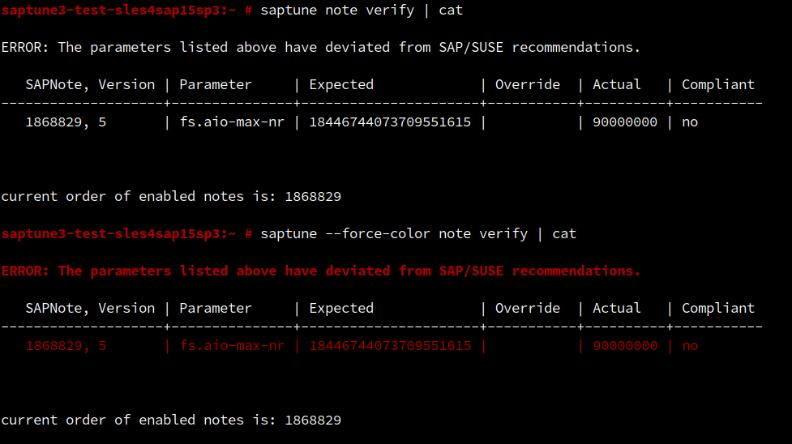
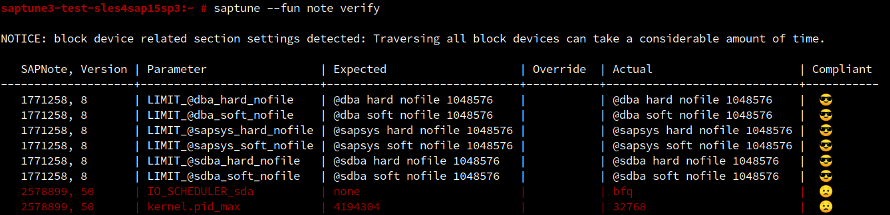
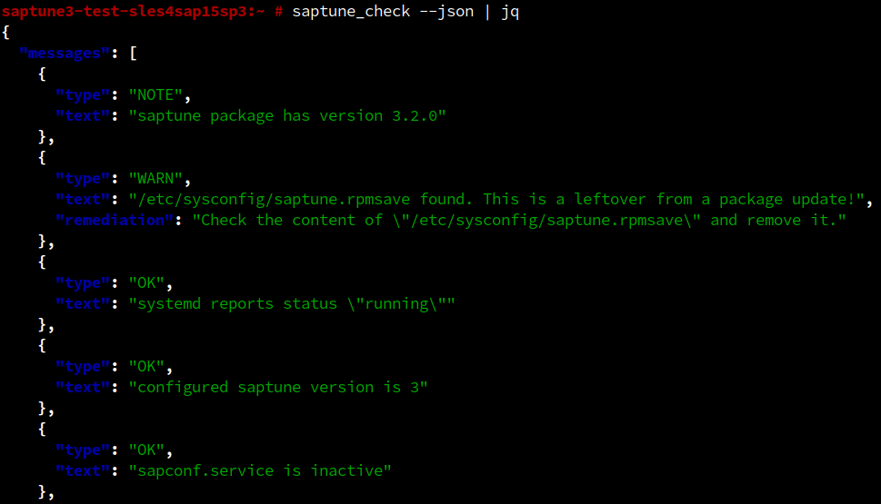
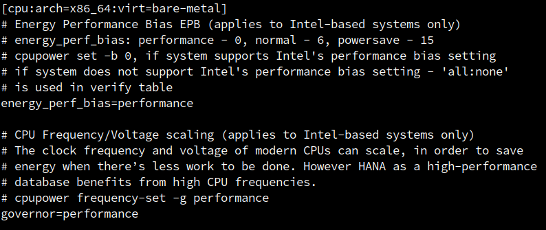
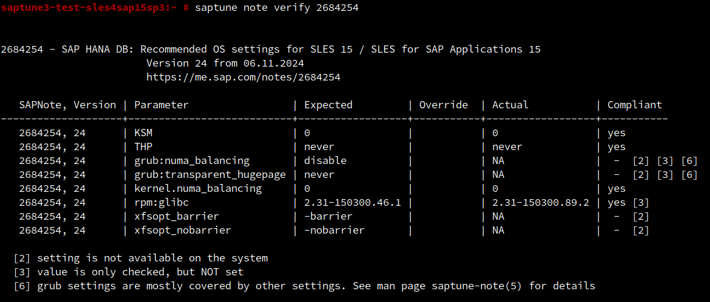

saptune 3.2 appeared in the repositories of:
saptune note verify appliedsaptune solution verify appliedsaptune note verify applied:
saptune verify appliedverify | verify applied |
|
|---|---|---|
saptune note | All enabled Notes (regardless if applied or not) are verified. | All applied Notes are verified. |
saptune note | Only for an enabled Solution all enabled Notes of that Solution gets verified. | Only for an applied Solution all applied Notes of that Solution gets verified. |
saptune.service, but enabled Notes.

/etc/sysconfig/saptune.
Most certainly, you have never touched that file. It contains internal states, but some rarely used options can be configured only by editing that file.
With 3.2 this file should not be edited anymore directly. With SLES 16 we go a step further and move it away from /etc.
This requires a new set of configuration commands to allow to make changes, when it makes sense.
These commands have safeguards to prevent ending up with an unworkable configuration.
saptune configure OPTION VALUE - sets OPTION to VALUE after sanity check
saptune configure show - shows the content of the saptune configuration file
saptune configure reset - resets the configuration to the installation default (after confirmation)

Check out the man page `man 8 saptune` for the supported options.saptune note refresh
comes with 3.2, but is still marked as experimental and you have to manually confirm the action!
It can only refresh changes in Notes (and their Overrides) and only a few sections. The man page saptune(8) contains an overview.

--force-color--force-color
Normally the terminal detection disables coloring on output redirect. This new option enforces it.

--fun--fun must be used to bring them to light.
The first one are some appropriate smileys for the compliance status in verify:

Others will follow in future versions. ;-)
virt
Virtualization type as reported by /usr/bin/systemd-detect-virt or an abstract virtualization class defined as vm, chroot, container or bare-metal.pmu_name
CPU platform (must match the content of /sys/devices/cpu/caps/pmu_name)virt in SAP Note "2205917 - SAP HANA DB: Recommended OS settings for SLES 12 / SLES for SAP Applications 12" and "2684254 - SAP HANA DB: Recommended OS settings for SLES 15 / SLES for SAP Applications 15":

The CPU tuning now will only be part on x86_64 bare metal systems. This addresses a recent request to not show CPU tuning on virtual machines on verify. Until nowsaptune has internally detected the impossibility of tuning CPUs under certain circumstances and explained it by warnings and footnotes. Some customers were worried even though.
Limiting the tuning to bare-metal went a bit to far ignoring the fact, that onAWS and GCP some instance types do allow CPU tuning. This was rectified with 3.2.1 (see saptune 3.2.1 - cloudy, cloudy)
This also means, that on virtual machines or on IBM Power systems, CPU tuning is not shown on verify including their GRUB counterparts:

The screenshot also shows a second improvement. As you know, some tunings can be done by different ways, namely:force_latency versus grub:intel_idle.max_cstate/grub:processor.max_cstatekernel.numa_balancing versus grub:numa_balancingTHP versus grub:transparent_hugepage- if the counterpart is tuning the setting.
saptune-solution(5)saptune(7)saptune(7) we will collect general information about saptune. For now it only contains an outlook to the behavior on the upcoming SLE 16.
saptune daemonsaptune daemon start|stop|status are marked as deprecated and internally are redirected to their saptune service replacements. Now it gets serious.
In 3.2 for the upcoming SLE 16 the commands are removed and will not work anymore!
saptune note|solution simulatesimulate commands are not really necessary and were rarely used. They are marked as deprecated now and in 3.2 for the upcoming SLE 16 they are removed and will not work anymore!
saptune warns for quite some time if the old deprecated format is found, but kept working.
In 3.2 for the upcoming SLE 16 support is removed and v1 custom Notes are ignored!
For your own custom Notes, the fix is quite simple: Just add a [VERSION] section.
limits.conf only works for SAP instances started by SysV init scripts. For instances started by systemd, the limits must be set via a drop-in for the service unit and the nofile limit mentioned in the SAP Note is already set to the recommended value in the shipped one.
Therefore we have deprecated the SAP Note "1771258 - Linux: User and system resource limits" and the LIMIT feature itself.
In 3.2 for the upcoming SLE 16 it is removed and not available anymore! SLE 16 has no SysV support anyway and SAP systems must be started by `systemd`.
For SLES 12 and 15 it will not be removed as long SysV-based SAP software is supported.
saptune more secure, we started to tighten saptune.service as the first step. The [Service] section now contains some security settings of systemd:
ProtectSystem=full
ReadWritePaths=/etc/systemd/system/
ProtectHome=true
PrivateDevices=true
ProtectHostname=true
ProtectClock=true
ProtectKernelTunables=false
ProtectKernelModules=true
ProtectKernelLogs=true
ProtectControlGroups=false
MountAPIVFS=no
RestrictRealtime=true
This should not impact the functionality of saptune at all!
saptune chapter in the SLES for SAP application Guide has been complemented with the changes in 3.2. Additionally some chapters got enhancements due to customer feedback too.
The update Guide will be available very early in September.
These are most of the changes. A complete list can be found - as always - in the RPM changelog.
As we do with ever no release, all shipped SAP Notes have been updated with their latest versions.
Above several times changes in SLE 16 are mentioned. Closer to its release, a separate blog post will introduce the changes in regards to saptune and sapconf!
Enjoy!